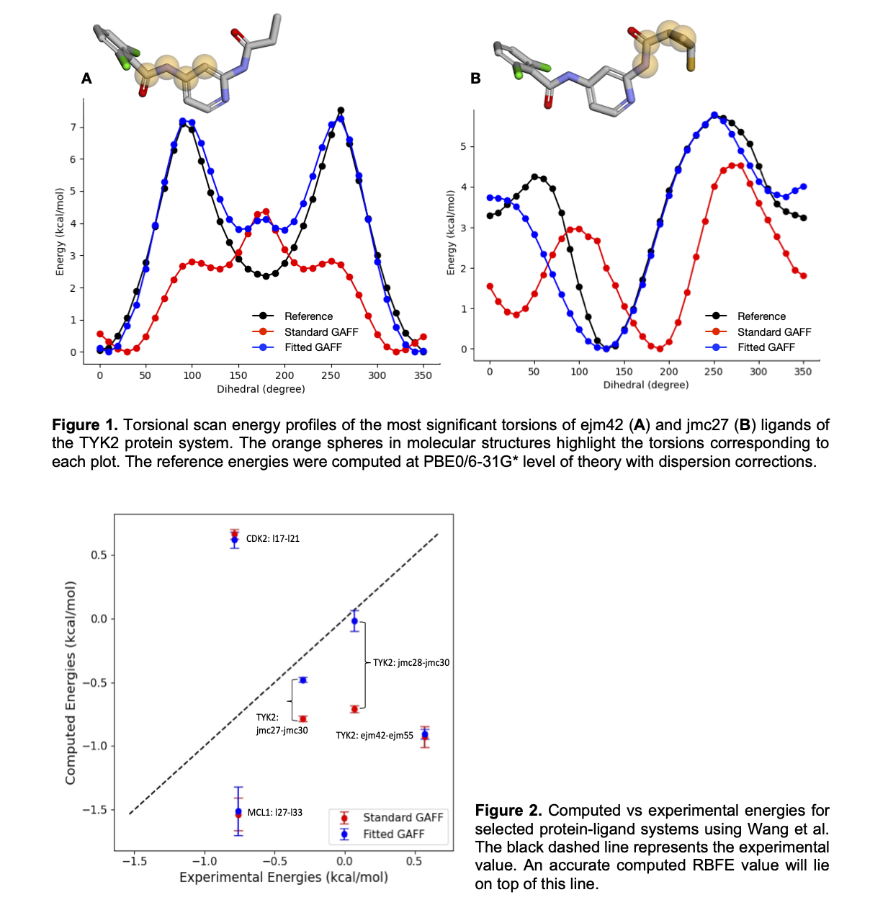

Accuracy and Performance
The data presented in this section were initially obtained using a previous version of AFFDO and have been further extended using the latest version, AFFDO-25.11. See the details below.
Note: The code is continuously being improved. Please make sure to use the latest AFFDO version.
Validation Study
We have validated the accuracy of AFFDO using a protein-ligand dataset reported by Wang et al. [1]. In this dataset, the authors report the experimental relative binding free energies (RBFE) values for a series of protein-ligand systems. For the validation study, a subset of these systems was selected, and RBFE simulations were carried out using the Amber Drug Discovery Boost package [2]. The standard GAFF (GAFF 2.11) force field was used for ligands, the ff14SB parameter set was used for proteins, and the TIP4P model was used for water. The computed RBFE values using GAFF were compared against the experimental values; protein-ligand systems that displayed >1.0 kcal/mol error (the chemical accuracy threshold) were identified to test and validate AFFDO. Each ligand was used as input to the workflow, and force fields with optimized dihedral parameters were obtained for each ligand. The time taken for the full reparameterization process varied from 3 to 48 hours, depending on the system size, atom types, and hardware being used.
In Figure 1, we present the torsional scan energy profiles for the most significant torsions of TYK2 ejm42 (A) and jmc27 (B). The GAFF2 energy profile (Standard GAFF) of the former mostly differs from the reference profile by barrier height. In contrast, the latter not only differs in barrier height, but also in phase. Using the AFFDO platform, both the phase and barrier height can be fitted, resulting in much tighter fits to the reference profiles (Fitted GAFF). After reparameterization, fitted force field parameters were used to recompute RBFE values for protein-ligand pairs. As depicted in Figure 2, the reparameterized GAFF force field improves the computed RBFE for all systems. For certain systems (e.g., TYK2 jmc28-jmc30, jmc27-jmc30), this improvement is more prominent than in others.

We have extended these validations using our latest version AFFDO-25.11 in our manuscript [3], where we benchmark AFFDO against a wider range of drug-like molecules with complex torsions. In this study, both dihedral barrier heights and 1-4 scaling factors were optimized simultaneously. The results further demonstrate that AFFDO can significantly improve GAFF torsion parameters, leading to more accurate free energy predictions across different chemical environments.
Highlights from this new study include:
Torsion-scan accuracy: For the TYK2 series, customized GAFF2 reduces MAE/RMSE from 1.56/1.92 kcal/mol to 0.20/0.24 kcal/mol relative to DFT scans; for the MCL1 series, errors drop from 0.81/1.08 to 0.51/0.69 kcal/mol, with Pearson and Spearman correlations ≥0.94 across both sets.
RBFE improvements: AFFDO lowers the MAE in roughly 80% of the TYK2 and MCL1 transformations; inside this positively impacted subset the average drop is ~0.4 kcal/mol for TYK2 and ~0.8 kcal/mol for MCL1, with the largest gain reaching 2.45 kcal/mol. When considering all transformations, the net MAE reduction drops to half.
Sampling robustness: Sampling robustness: Reparameterized torsions reduce RBFE uncertainty and improve sampling consistency, leading to more stable MD ensembles and more reliable alchemical free-energy calculations.
Workflow throughput: Representative fragments (e.g., TYK2 jmc28_F1, MCL1 L35_F1) complete in roughly 1–7 hours on a 36-core/4×GPU cloud node, with QC centroid optimizations and torsional scans dominating wall time.
These findings, along with full torsional profiles, benchmarking workflows, and extended RBFE analyses, are presented comprehensively in our manuscript and its accompanying supporting information [3].
Extended Benchmark: Default AFFDO Settings
In addition to the manuscript results above, we have benchmarked the current default AFFDO configuration on an extended subset of the Wang et al. [1] dataset. In this benchmark, only dihedral barrier heights are optimized (without scaling factor adjustments). This represents the out-of-the-box AFFDO experience for users running with default settings.
The benchmark covers 58 systems from two protein families: TYK2 (16 systems, neutral ligands) and MCL1 (42 systems, charged ligands q = −1). Each system was evaluated at three reference levels to assess the impact of reference quality on fitting accuracy.
Aggregate Metrics
The table below summarizes the overall GAFF2 vs AFFDO performance across 58 systems (305 torsions) from the Wang et al. [1] dataset, using DFT constrained-optimization (PBE0-D3BJ/6-31G*) as the reference level. Metrics quantify agreement with QC torsional potential energy surfaces obtained from constrained dihedral scans evaluated on a 20° angular grid (i.e., scan-point energies) and should not be interpreted as RBFE predictive accuracy.
| Metric | GAFF2 | AFFDO | Change |
|---|---|---|---|
| MAEa (kcal/mol) | 1.12 ± 0.10 | 0.41 ± 0.04 | −63% |
| RMSEa (kcal/mol) | 1.39 ± 0.12 | 0.55 ± 0.05 | −60% |
| Pearson (r) | 0.87 | 0.96 | +10% |
| Spearman (ρ) | 0.85 | 0.94 | +11% |
| Max RMSDb (Å) | 0.68 ± 0.06 | 0.81 ± 0.07 | +19% |
| a Uncertainties are reported as 95% CI calculated analytically. b Maximum RMSD between reference (DFT) and MM-optimized geometries across scan points per torsion; see Geometry Fidelity. | |||
Across 58 systems and 305 torsions, AFFDO reduces the overall RMSE by 60% (from 1.39 to 0.55 kcal/mol) and the MAE by 63% (from 1.12 to 0.41 kcal/mol), while improving the Pearson correlation from 0.87 to 0.96. The increase in Max RMSD (0.68 to 0.81 A, +0.13 A) is an expected side effect of improving the energy fit; the baseline GAFF2 geometries are already close to the reference, so the absolute change remains small. AFFDO mitigates this through geometry-aware regularization (see Geometry Fidelity). These improvements are consistent across both the MCL1 (42 systems, charged) and TYK2 (16 systems, neutral) protein families.
Fitting Accuracy by Reference Level
AFFDO supports multiple reference levels for torsion energy profiles. To guide users in selecting the appropriate reference level, we benchmarked the same 58 systems (16 TYK2, 42 MCL1) at three theory levels:
XTB: GFN2-XTB torsional scan (fast, semi-empirical)
DFT-SP: DFT single-point on XTB geometries (PBE0-D3BJ/6-31G*)
DFT: Full DFT constrained optimization (PBE0-D3BJ/6-31G*)
Note
Each reference level uses a different energy surface. The metrics below assess how well AFFDO fits each level’s own profile. Because the reference profiles differ, RMSE/MAE values cannot be directly compared across levels — a lower RMSE at XTB reflects the smoothness of XTB profiles, not necessarily better parameter quality. For a direct comparison of reference levels against DFT ground truth, see the Cross-Reference Analysis below.
All energies are in kcal/mol. Uncertainties are 95% confidence intervals. When AFFDO does not improve a torsion, GAFF2 parameters are retained.
| Metric | TYK2 (16 sys, neutral) | MCL1 (42 sys, q = −1) | ||||
|---|---|---|---|---|---|---|
| GAFF2 | AFFDO | Δ | GAFF2 | AFFDO | Δ | |
| XTB reference | ||||||
| MAE (kcal/mol) | 1.61 ± 0.27 | 0.15 ± 0.04 | −91% | 1.37 ± 0.10 | 0.30 ± 0.03 | −78% |
| RMSE (kcal/mol) | 2.00 ± 0.31 | 0.21 ± 0.07 | −90% | 1.76 ± 0.13 | 0.40 ± 0.04 | −77% |
| Pearson (r) | 0.79 | 0.99 | +25% | 0.86 | 0.96 | +12% |
| Spearman (ρ) | 0.75 | 0.98 | +31% | 0.86 | 0.95 | +10% |
| Max RMSD (Å) | 0.85 ± 0.11 | 1.01 ± 0.13 | +19% | 0.79 ± 0.08 | 0.79 ± 0.08 | 0% |
| DFT-SP reference | ||||||
| MAE (kcal/mol) | 1.68 ± 0.22 | 0.28 ± 0.06 | −83% | 1.05 ± 0.08 | 0.34 ± 0.03 | −68% |
| RMSE (kcal/mol) | 2.09 ± 0.26 | 0.39 ± 0.09 | −81% | 1.32 ± 0.09 | 0.47 ± 0.05 | −64% |
| Pearson (r) | 0.82 | 0.99 | +21% | 0.88 | 0.97 | +10% |
| Spearman (ρ) | 0.77 | 0.98 | +27% | 0.88 | 0.95 | +8% |
| Max RMSD (Å) | 0.82 ± 0.11 | 0.89 ± 0.14 | +9% | 0.79 ± 0.08 | 0.84 ± 0.08 | +6% |
| DFT reference | ||||||
| MAE (kcal/mol) | 1.66 ± 0.24 | 0.46 ± 0.09 | −72% | 0.90 ± 0.09 | 0.39 ± 0.04 | −57% |
| RMSE (kcal/mol) | 2.04 ± 0.27 | 0.63 ± 0.13 | −69% | 1.12 ± 0.11 | 0.52 ± 0.05 | −54% |
| Pearson (r) | 0.81 | 0.98 | +21% | 0.90 | 0.96 | +7% |
| Spearman (ρ) | 0.75 | 0.95 | +27% | 0.89 | 0.94 | +6% |
| Max RMSD (Å) | 0.89 ± 0.11 | 0.95 ± 0.13 | +7% | 0.58 ± 0.07 | 0.75 ± 0.08 | +29% |
All three reference levels produce significant improvements over standard GAFF2, with RMSE reductions of 60–90% and Pearson correlations reaching 0.95–0.99. Max RMSD increases range from 0.05 to 0.17 A in absolute terms; larger percentage changes reflect cases where GAFF2 geometries are already close to the reference (e.g., DFT MCL1 baseline of 0.58 A). In terms of torsion improvement rates, XTB improves 82% of TYK2 and 95% of MCL1 torsions; DFT-SP achieves the highest rates at 83% (TYK2) and 98% (MCL1); DFT constrained-optimization improves 81% of TYK2 and 79% of MCL1 torsions.
DFT-SP combines DFT-quality energies with XTB geometries at single-point cost, producing smooth energy profiles that the optimizer fits reliably. XTB is competitive for both neutral and charged molecules, achieving the lowest absolute RMSE values. DFT constrained-optimization produces the most physically accurate profiles but is the hardest to fit — full geometry relaxation introduces complex energy landscape features that single-barrier fitting cannot fully capture.
Geometry Fidelity
AFFDO uses a two-level optimization strategy to balance energy accuracy with geometric fidelity. In the inner loop, torsion parameters are refined using single-point (SP) energy evaluations on fixed geometries — this is fast and allows efficient gradient-based exploration of parameter space. Periodically, outer geometry-refresh cycles re-minimize MM geometries with the updated parameters and recompute energy profiles, ensuring that the torsion parameters remain consistent with relaxed molecular structures.
This approach yields substantial energy improvements (60–90% RMSE reduction) with only a modest increase in structural deviation from the reference geometries. The Max RMSD between reference and MM-optimized geometries (see per-reference-level tables above) typically increases by 0.05–0.17 A after fitting — well within general force field accuracy expectations.
To further control this trade-off, AFFDO employs a composite scoring function during outer-cycle selection:
where \(\lambda\) (default 0.5) weights geometric fidelity against energy accuracy. This provides a light geometry bias when selecting among candidate parameter sets from different optimization cycles, without significantly affecting energy quality.
Benchmarking on the 16 TYK2 ligands (73 torsions) at the XTB reference level illustrates the effect of geometry regularization:
| Metric | λ = 0 | λ = 0.5 (default) |
|---|---|---|
| Mean energy RMSD (kcal/mol) | 0.129 | 0.132 |
| Mean geom RMSD (Å) | 0.418 | 0.375 |
| Mean norm_RMSE | 0.045 | 0.046 |
With no regularization (\(\lambda = 0\)), the optimizer achieves the lowest energy RMSD but the mean geometry RMSD rises to 0.418 A. Enabling the default regularization (\(\lambda = 0.5\)) brings geometry RMSD down to 0.375 A — a 10% improvement — at a negligible energy cost. The net result is a fitting procedure that converges faster than full geometry optimization at every iteration, produces better energy fits, and maintains acceptable structural accuracy.
Note
Two geometry RMSD metrics appear in the AFFDO results:
Max RMSD (per-reference-level tables above): the maximum RMSD between reference and MM-optimized geometries across all scan points for a given torsion, evaluated once with the final fitted parameters. This is a post-hoc quality metric.
Mean geom RMSD (lambda comparison table): the mean RMSD across all scan points, computed during fitting at each outer geometry-refresh cycle. This is the metric used by the composite score to select among candidate parameter sets from different optimization cycles.
Cross-Reference Analysis
The fitting accuracy table above shows how well AFFDO reproduces each reference level’s own energy surface — but it does not tell us how close the resulting parameters are to DFT ground truth. To answer that question, we evaluated XTB and DFT-SP torsion profiles directly against DFT constrained-optimization profiles for the same 305 torsions.
| Metric | XTB vs DFT | DFT-SP vs DFT |
|---|---|---|
| RMSE (kcal/mol) | 1.39 ± 0.09 | 0.97 ± 0.13 |
| MAE (kcal/mol) | 1.14 ± 0.08 | 0.74 ± 0.10 |
| Pearson (r) | 0.84 | 0.85 |
DFT-SP profiles are 30% closer to DFT ground truth than XTB profiles (RMSE 0.97 vs 1.39 kcal/mol). This gap propagates through fitting: even though XTB fitting achieves a lower self-referential RMSE (0.21 vs 0.39), the XTB reference surface itself is further from DFT, so the final fitted parameters end up less accurate.
The table below combines fitting quality, reference quality, and net accuracy to show the full picture:
| Reference | Fitting quality (self-ref RMSE) |
Reference quality (vs DFT RMSE) |
Net accuracy (fitted vs DFT RMSE) |
|---|---|---|---|
| XTB | 0.21 | 1.39 | 1.40 |
| DFT-SP | 0.39 | 0.97 | 1.07 |
| DFT | 0.55 | 0.00 | 0.41 |
| All RMSE values in kcal/mol. 305 torsions from 58 Wang et al. systems. | |||
DFT constrained-optimization yields the highest accuracy (net RMSE 0.41 kcal/mol) but requires the longest computation time. DFT-SP is a cost-effective alternative, achieving 24% lower net error than XTB (1.07 vs 1.40 kcal/mol) at a fraction of the cost of full DFT. XTB provides rapid turnaround but its reference surface is further from DFT ground truth, which limits the final parameter quality regardless of fitting accuracy.
Reference Level |
Speed |
Net RMSE |
Notes |
|---|---|---|---|
DFT |
Slow |
0.41 |
Highest accuracy; longest computation time |
DFT-SP |
Medium |
1.07 |
Good alternative; best improvement rate (83–98%) |
XTB |
Fast |
1.40 |
Rapid screening; limited by reference quality |
Charge Model Comparison
This section will be updated with charge model benchmarks (AM1-BCC vs ABCG2 vs RESP) as results become available.
This benchmark is being extended to additional Wang et al. [1] systems and will be updated as new results become available.
References
[1] Wang, L., Wu, Y., Deng, Y., et al. (2015). Accurate and reliable prediction of relative ligand binding potency in prospective drug discovery by way of a modern free-energy calculation protocol and force field. Journal of the American Chemical Society, 137(7), 2695-2703.
[2] Ganguly, A., Tsai, H. C., Fernández-Pendás, M., Lee, T. S., Giese, T. J., & York, D. M. (2022). AMBER Drug Discovery Boost Tools: Automated Workflow for Production Free-Energy Simulation Setup and Analysis (ProFESSA). Journal of Chemical Information and Modeling, 62(23), 6069-6083.
[3] Blanco-Gonzalez, A.; Betancourt, W.; Snyder, R. M.; Zhang, S.; Giese, T. J.; Piskulich, Z. A.; Götz, A. W.; Merz, K. M., Jr.; York, D. M.; Aktulga, H. M.; Manathunga, M. Automated Force Field Developer and Optimizer Platform: Torsion Reparameterization. J. Chem. Inf. Model. 2026, 66 (6), 3206–3219. DOI: 10.1021/acs.jcim.6c00528
Last updated on 03/24/2026.